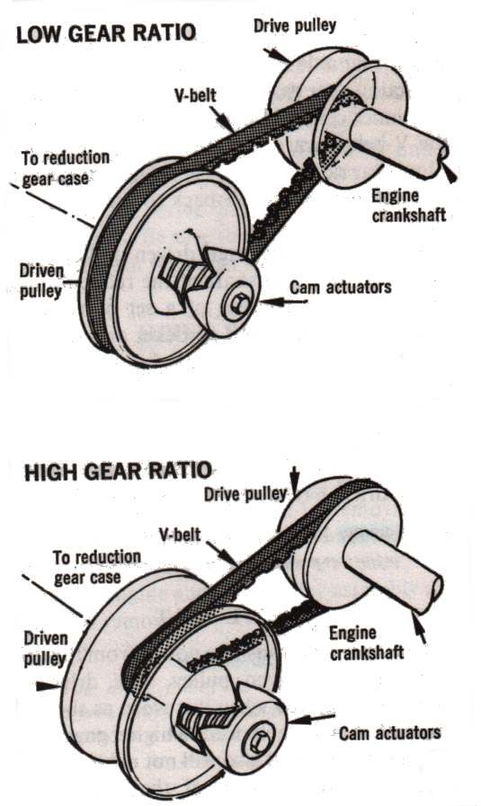
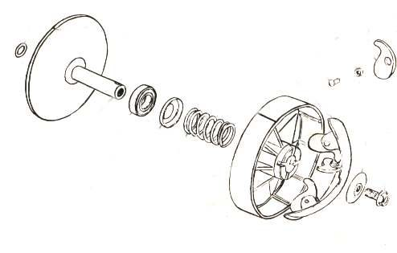
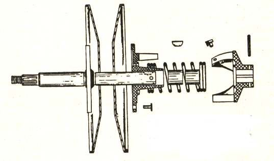
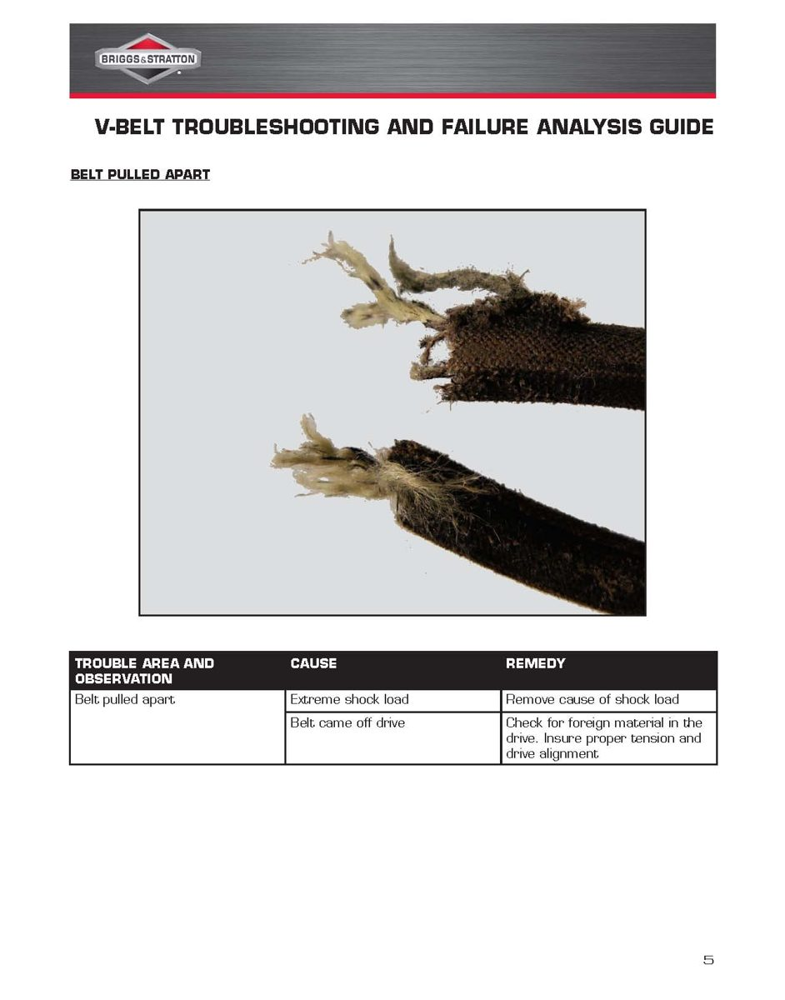
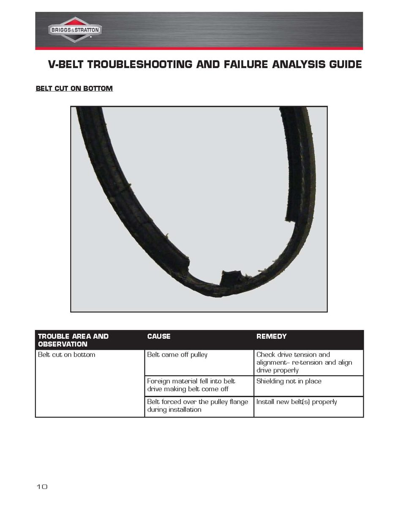
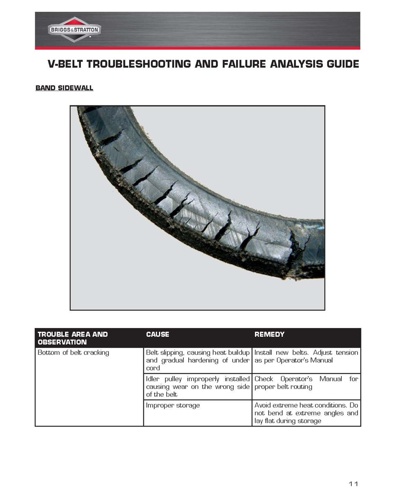

The engine runs and revs, but the scooter does not move or stops driving suddenly, often after a bang or slapping noise from the drive case. The rubber belt that carries power from the engine to the clutch has snapped or shredded. The belt usually breaks because it was old and worn, but oil contamination, overheating, damaged pulley faces or rollers, and a wrongly fitted belt also break belts. Find the cause before fitting a new one. For part numbers and settings, follow your scooter's manual.
Is it safe to ride?
No. Stop safely at the roadside. Do not keep revving the engine. Pieces of belt can jam in the case and damage the fan, the pulleys or the case itself.
Quick checks first
- Switch off the engine.
- Push the scooter: does the rear wheel turn freely? If it is jammed, do not force it.
- Look at the drive case for cracks and at the air duct for belt pieces.
Diagnose it step by step
1Does the rear wheel turn freely when you push the scooter?
- No: belt pieces may be jammed in the clutch or gear area. Transport the scooter and open the case before moving it far.
- Yes: go to step 2.
2Open the drive case (engine cold). Are the pulley faces, rollers or fan damaged, or is anything loose?
- Yes: these must be repaired before a new belt goes in, or it will fail again. Check variator rollers and sliders, Check the scooter clutch and bell.
- No: go to step 3.
3Is there oil or grease in the case or on the old belt?
- Yes: find the leak first: Oil leaking from the scooter rear gear case, Change scooter final drive oil. Clean all faces with brake cleaner.
- No: go to step 4.
4Was the old belt old, or had it been slipping or squealing?
- Yes: it reached the end of its life. Fit a new belt and keep to the replacement interval in your owner's manual: Inspect and replace the scooter drive belt.
- No, it was fairly new: go to step 5.
5Was the new belt the correct part, fitted in the right direction, and not pinched between the variator halves?
- No, or not sure: refit correctly with the right part.
- Yes: check for overheating: a blocked or disconnected air duct to the drive case, very heavy loads, or long steep climbs at full throttle. See also Air-cooled engine overheats.
Causes, most likely first
| Cause | How to confirm | Fix |
|---|---|---|
| Belt worn out | Old belt, no service record | Inspect and replace the scooter drive belt |
| Oil contamination | Oil in the case | Fix leak, clean, new belt |
| Damaged rollers or pulley faces | Flat rollers, grooves, blue marks | Check variator rollers and sliders |
| Wrong or wrongly fitted belt | Recent belt change | Refit correct part |
| Overheating | Blocked duct, heavy loads | Clear the duct; check the clutch |
| Object jammed in the drive, or belt levered on | Cords pulled out, cut on the bottom | Remove debris; fit the belt by hand; Read a worn or broken scooter belt |